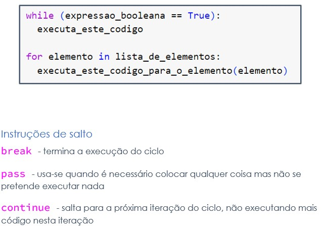

# imprimir na consola
print('olá mundo!')olá mundo!Introdução a conceitos básicos da linguagem de programação Python.
linguagem de programação:
modo interativo vs modo script
Iniciar -> Anaconda prompt (se o Anaconda estiver configurado).
modo interativo vs modo script
criado um ficheiro.py, pode ser executado:
python -u "c:\Users\documents\ficheiro.py"
# imprimir na consola
print('olá mundo!')olá mundo!# docstring, funciona como comentário mas não é recomendado
"""
permite escrever texto
em multiplas
linhas
"""'\npermite escrever texto \nem multiplas\nlinhas\n'imprimir números e /ou cálculos:
print(3+6)9para concatenar texto formatado
numero = 4
print(f"O número é: {numero*2}")O número é: 8imprimir múltiplas linas
print("""
linha1
linha2
""")
linha1
linha2
raw strings
# forçar a imprimir exactamente o que está entre ''
print(r'tudo\namora')
# ou então podemos imprimir com a qubra de linha
print('tudo\namora')tudo\namora
tudo
amoraold string formating%
# se x for string
x = '15'
print("x como string = %s" %(x))x como string = 15y = int(x)
print("x como integer = %d" %(y))
print("x como float = %09.4f" %(y))x como integer = 15
x como float = 0015.0000input("Escreve um input: ")função que avalia o seu argumento:
numero = eval('2')
# em alternativa podemos especificar o tipo que pretendemos
numero = int('2')
print(f"o dobro do numero é: {numero *2}")o dobro do numero é: 4em alternativa podemos especificar o tipo que pretendemos
inteiro = int('2')
print(f"o dobro do numero é: {inteiro *2}")o dobro do numero é: 4No modo script podemos criar um ficheiro com o código que queremos executar, por exemplo o ficheiro mod1.py e excecutar na linha de comandos (Iniciar -> Anaconda prompt):
C:\Users\bruno.lima\Documents\Python\python2024\exercicios>python mod1.py
# quatro operações básicas
print(2+2, 5-2, 4*2, 10/5)
# potencias
4**3
# calcula horas
minutos = 70
print(f"são {minutos//60} horas e {minutos-60} minutos")4 3 8 2.0
são 1 horas e 10 minutos# por convenção devemos usar nome do formato case_snake
cores_do_arco_iris = ['red','green','yellow','blue','orange','indigo', 'violet']
numero_de_tons = len(cores_do_arco_iris)
numero_de_tons7casting
x = int(3)
y = str(3)
z = float(3)# calcular o vlume de um cilindro dado o raio da base e a altura
raio_base = 2
altura = 10
area_base = 3.14*raio_base**2
volume = area_base*float(altura)
print(f"o volume é: {volume} m3")o volume é: 125.60000000000001 m3obtem os primeiros 4 divisores de um número N, separados por ‘++++’
N = 12
lista = []
for i in range(1, N+1):
if N%i == 0:
lista.append(i)
print(*lista[:4], sep = '+++')1+++2+++3+++4obtem os primeiros 4 múltiplos de um número, separados por ‘++++’
numero=3
print(f'os múltiplos de {numero} são: {numero *1}', numero *2, numero *3, numero *4, sep = ' ++++ ', end = " ^^")os múltiplos de 3 são: 3 ++++ 6 ++++ 9 ++++ 12 ^^str
numérico:
bool
sequencia:
-list -tuple -range
dict
set / frozenset
binario:
a = "um conjunto de letras"
tipo=type(a)
len(a)
print(f"o tipo da variável 'a' é {tipo}")
print(f"a primeira letra é %s e a ultima letra é %s" % (a[0], a[-1]))
print(a[:2]) # todas as letras até à segunda posiçãoo tipo da variável 'a' é <class 'str'>
a primeira letra é u e a ultima letra é s
uminti1 = 12
i2 = -1
print(type(i1), type(i2))<class 'int'> <class 'int'>floatf2=-7.7e100
f3=2E2
print(f2, f3)-7.7e+100 200.0A instalação dos packages deve ser feita através do terminal Bash com o comando: $ pip install pandas
import math
print(repr(math.pi))
print(format(math.pi,'.12g'))
print(format(math.pi,'.2f'))3.141592653589793
3.14159265359
3.14arredondamento implicito
print(.1+.1+.1 == .3)
print(round(.1+.1+.1, 10) == round(.3, 10))False
Truec1 = 1j
c2 = 3+5j
print(type(c1), type(c2))<class 'complex'> <class 'complex'>boolprint(type(True))
print(f"o número zero é: {bool(0)}")
print(f"o número 45 é: {bool(45)}")
print(f"o nome 'INE' é: {bool('INE')}")
print(f"o vazio é: {bool('')}")<class 'bool'>
o número zero é: False
o número 45 é: True
o nome 'INE' é: True
o vazio é: FalseNoneType
# conversão implicita
x = 10
y = 5
z = x+y
print(type(z))<class 'int'>#conversão para inteiro
print(int(1))
print(int(2.8))
print(int(3))1
2
3# conversão para float
print(float('3.1'))3.1# conversão para bool
print(bool(1))True# conversão para string
a = str(2)
b = str(3.0)
print(a,b)2 3.0#conversão com eval
a = eval('8**2')
print(a)64packages
subpackages
module: funções, classes, variáveis, código, …def nome_da_funcao(parametros):
""" comentário com propósito da função"""
# corpo da função (instruções e lógica)
return informacao_a_retornarexemplos:
def soma(x,y):
""" AVISO """
return(x+y)
soma(1,2)3# criar uma função que devolve um valor elevado a uma potencia
def pot(base, expo):
return(base**expo)
print(pot(5,2))25chove = True
if (chove):
print("chove mesmo!")
else:
print("Faz sol!")chove mesmo!operadores de comparação
'>', '<', '==', '>=', '<=', '!=', 'is' ['not'], ['not'] 'in' a = 1
b = 2
c = 3
print(f"1-{a} <{b} <{c}")1-1 <2 <3idade = int('20')
decisao = 'já pode votar' if idade >=18 else 'ainda não pode votar'
print(f"com {idade} anos, a decisão é: {decisao}")com 20 anos, a decisão é: já pode votar# exemplo de menor legibilidade
nr_mes = 3
nome_mes = 'janeiro' if nr_mes == 1 else \
'fevereiro' if nr_mes == 2 else \
'março' if nr_mes == 3 else \
'outro'
print(nome_mes)março
# definir função oráculo usado mais em baixo
def oraculo_mistico(pergunta):
''' retorna uma resposta à pergunta feita
ao estilo do jogo "Bola 8 mágica"
'''
import random
respostas = [
"Sim", "Não", "Claro", "Com certeza", "Arrisque", "Não conte com isso", "Provavelmente",
"É duvidoso", "Talvez", "Não tenho certeza", "Sem dúvida", "Absolutamente",
"É melhor não dizer agora", "Concentre-se e pergunte novamente", "Minhas fontes dizem não",
"As perspectivas não são boas", "Não é possível prever agora", "Reformule sua pergunta",
"Não posso responder a isso", "Pergunte novamente mais tarde", "Probabilidade zero",
"Está nas estrelas", "Muito provável", "Os astros são favoráveis"
]
return random.choice(respostas)continuar_jogo = True
while(continuar_jogo):
pergunta = input("faz pergunta: ")
if(pergunta == 'sair'):
continuar_jogo = False
else:
reposta = oraculo_mistico(pergunta) # oraculo_mistico() é uma função ad hoc
print(f"A resposta é: {resposta}")for i in range(10):
print(i)0
1
2
3
4
5
6
7
8
9Com um for loop escreve os primeiros 10 multiplos de 7
for i in range(10):
print(i * 7)0
7
14
21
28
35
42
49
56
63Com recurso a loops,repita uma palavra definida pelo utilizador o número de vezes que ele pretenda, removendo a primeira letra da palavra introduzida
palavra='teste'
n=5
print(palavra[1:]*n, sep=' + ')
for i in range(n):
print(palavra[1:])esteesteesteesteeste
este
este
este
este
esteSimule o jogo de pedra, papel e tesoura com o computador (papel ganha pedra que ganha tesoura que ganha papel):
from random import sample
lista = ['pedra','papel','tesoura']
jogador1 = sample(lista,1)[0]
jogador2 = sample(lista,1)[0]
print(jogador1, jogador2)
ganhador = 'empate' if jogador1 == jogador2 else \
'jogador1' if jogador1 == 'papel' and jogador2 == 'pedra' else \
'jogador1' if jogador1 == 'tesoura' and jogador2 == 'papel' else \
'jogador1' if jogador1 == 'pedra' and jogador2 == 'tesoura' else \
'jogador2'
print(f"o vencedor é o {ganhador}")pedra papel
o vencedor é o jogador2solução alternativa:
import random
fim_do_jogo = False
while (not(fim_do_jogo)):
jogada_humana = int(input("escolha:\n1 - pedra\n2 - papel\n3 - tesoura\n0 - terminar o jogo\n"))
if (jogada_humana == 0):
print("fim.\n")
fim_do_jogo = True
else:
jogada_cpu = random.choice([1, 2, 3]) # porque ainda não conhecemos o randint()
jogada_cpu_texto = "pedra"
if (jogada_cpu == 2):
jogada_cpu_texto = "papel"
elif (jogada_cpu == 3):
jogada_cpu_texto = "tesoura"
if (jogada_cpu == jogada_humana):
print("empate\n")
else:
print(f"o computador jogou '{jogada_cpu_texto}'.")
if ((jogada_cpu == 1 and jogada_humana == 2) or (jogada_cpu == 2 and jogada_humana == 3) or (jogada_cpu == 3 and jogada_humana == 1)):
print("vitória humana!\n\n")
else:
print("o computador venceu\n\n")print("a lista de nomes que podemos usar:")
dir()
len(dir())a lista de nomes que podemos usar:103import random
import math
len(dir())106range()
for i in range(1, 5, 2):
print(i)1
3ord()
ord('a')97pow()
print(pow(4,2,5) == 4**2 %5)Truesum()
len()
max()
var1 = 'teste'
var2 = 'palavra'
var3 = 'coisa'
max_val = max(var1, var2, var3, key = len)
print(max_val)palavraficheiro = open(r"c:\path\ficheiros.txt", modo_de_acesso)
tentativa de uniformizar:
import os
path = os.path.join(os.sep, rooth_path + os.sep = 'directoria')ler linha a linha:
linhas = [line.strip().split('',1)] for line in open(nome_do_ficheiro)
open(nome_do_ficheiro).read()
open(nome_do_ficheiro).readlines()escrever ficheiros
# @title
ficheiro_escrita = g_path + 'texto_escrito.txt'
with open(ficheiro_escrita, 'w') as f:
f.write('Escrita a funcionar!')
f.close()# @title
ficheiro_escrita = g_path + 'texto_escrito2.txt'
linhas = [
"aaa",
"bbb",
"ccc"
]
ficheiro = open(ficheiro_escrita, 'w')
ficheiro.writelines(linhas)
ficheiro.close() # to change file access modes# @title
ficheiro_append = g_path + 'texto_append.txt'
linhas = [
"uma linha\n",
"duas linhas\n",
"tantas linhas\n"
]
ficheiro = open(ficheiro_append, 'a')
ficheiro.writelines(linhas)
ficheiro.close() # to change file access modesmathsimport math
dir(math)['__doc__',
'__loader__',
'__name__',
'__package__',
'__spec__',
'acos',
'acosh',
'asin',
'asinh',
'atan',
'atan2',
'atanh',
'cbrt',
'ceil',
'comb',
'copysign',
'cos',
'cosh',
'degrees',
'dist',
'e',
'erf',
'erfc',
'exp',
'exp2',
'expm1',
'fabs',
'factorial',
'floor',
'fmod',
'frexp',
'fsum',
'gamma',
'gcd',
'hypot',
'inf',
'isclose',
'isfinite',
'isinf',
'isnan',
'isqrt',
'lcm',
'ldexp',
'lgamma',
'log',
'log10',
'log1p',
'log2',
'modf',
'nan',
'nextafter',
'perm',
'pi',
'pow',
'prod',
'radians',
'remainder',
'sin',
'sinh',
'sqrt',
'sumprod',
'tan',
'tanh',
'tau',
'trunc',
'ulp']statisticsimport statistics
dir(statistics)
sample = [10,203,54,69,221,57,84,29,46,77]
# o valor NaN (Not a Number) afecta o comportamento de muitas destas funções,
# ou seja, convém remover os NaN das listas antes de invocar estas funções
res = statistics.mean(sample)
print("Média: ", res)
# fmean -> mais rápido, converte todos os valores para float
res = statistics.median(sample)
print("Mediana: ", res)
#res = statistics.median_low(data)
#res = statistics.median_high(data)
res = statistics.stdev(sample)
print("Devsio padrão: ", res)
# pstdev - toda a população
res = statistics.mode(sample)
print("Moda: ", res)
res = statistics.multimode(sample)
print("Modas (por ordem de aparecimento na lista): ", res)
res = statistics.variance(sample)
print("Variância da amostra:", res)
# pvariance - toda a populaçãoMédia: 85
Mediana: 63.0
Devsio padrão: 70.52816616233703
Moda: 10
Modas (por ordem de aparecimento na lista): [10, 203, 54, 69, 221, 57, 84, 29, 46, 77]
Variância da amostra: 4974.222222222223randomimport random
dir(random)
print(f"Um valor aleatório entre 0 e 1: {random.random()}")Um valor aleatório entre 0 e 1: 0.4114041311241732lista = [5,7,9]
sum(lista)
#lista.sum()21# @title juntar listas
aves = ["águia", "papagaio", "gaivota"]
peixes = ["salmão", "tubarão", "carpa"]
animais = aves + peixes
print(animais)['águia', 'papagaio', 'gaivota', 'salmão', 'tubarão', 'carpa']mamiferos = ['cao','gato','elefante']
for i in range(len(mamiferos)):
print(i, mamiferos[i])0 cao
1 gato
2 elefanteacesso posicional
for i in reversed(lista):
print(i)9
7
5alterer listas append(), remove(), pop(),
lista.append(11)
lista.pop()11del lista[2]
print(lista)
print(lista[1::2])
invertida = lista[::-1][5, 7]
[7]alterar listas
lista = ['a','b',3,4]
lista[2:] = 'r'
print(lista)['a', 'b', 'r']sem repetições - sample()
com repetições - choices()
baralhar - shuffle()
print(' '.join(['pequena', 'pausa']))pequena pausa# @title remove o elemento na posição e devolve esse elemento
lista = [2, 5, 3, 7]
print("lista:",lista)
p = 1
removido = lista.pop(p) #
print(f'\n{p+1}º elemento da lista: {removido}')
print(f'lista após remoção do {p+1}º elemento: {lista}')
ultimo = lista.pop()
print(f'lista após remoção do último elemento: {lista}')lista: [2, 5, 3, 7]
2º elemento da lista: 5
lista após remoção do 2º elemento: [2, 3, 7]
lista após remoção do último elemento: [2, 3]# @title insere o elemento x na posição p da lista
lista = [2, 3, 7]
print("lista:",lista)
x = 8
p = 2
lista.insert(p, x)
print(f'\napós inserção do {x} na {p+1}ª posição: {lista}')lista: [2, 3, 7]
após inserção do 8 na 3ª posição: [2, 3, 8, 7]segmentar listas (slicing) possiblidades de segmentação lista[ indice_pos_inicial : indice_pos_final : incremento_do_indice ]
# @title
lista = [1, 2, 3, 4, 5, 6]
pares = lista[1::2]
print(lista, pares, sep="\n")[1, 2, 3, 4, 5, 6]
[2, 4, 6]slicing - alterando a lista
# @title
lista = ["a", "b", 3, 4]
lista[2:] = ["r"]
print(lista)['a', 'b', 'r']ver ficheiro mod1_ex_dia2_manha.py
string é uma sequencia de caracteres
str()
string = 'teste'
dir(string)['__add__',
'__class__',
'__contains__',
'__delattr__',
'__dir__',
'__doc__',
'__eq__',
'__format__',
'__ge__',
'__getattribute__',
'__getitem__',
'__getnewargs__',
'__getstate__',
'__gt__',
'__hash__',
'__init__',
'__init_subclass__',
'__iter__',
'__le__',
'__len__',
'__lt__',
'__mod__',
'__mul__',
'__ne__',
'__new__',
'__reduce__',
'__reduce_ex__',
'__repr__',
'__rmod__',
'__rmul__',
'__setattr__',
'__sizeof__',
'__str__',
'__subclasshook__',
'capitalize',
'casefold',
'center',
'count',
'encode',
'endswith',
'expandtabs',
'find',
'format',
'format_map',
'index',
'isalnum',
'isalpha',
'isascii',
'isdecimal',
'isdigit',
'isidentifier',
'islower',
'isnumeric',
'isprintable',
'isspace',
'istitle',
'isupper',
'join',
'ljust',
'lower',
'lstrip',
'maketrans',
'partition',
'removeprefix',
'removesuffix',
'replace',
'rfind',
'rindex',
'rjust',
'rpartition',
'rsplit',
'rstrip',
'split',
'splitlines',
'startswith',
'strip',
'swapcase',
'title',
'translate',
'upper',
'zfill']unir - .join()
o dicionário é um array associativo: conjunto de chave / valor
dict()
paises_iso = {
'Portugal': 'PT',
'Espanha': 'ES',
'Franca': 'FR',
'Alemanha': 'DE',
'Brasil': 'BR',
'Argentina': 'AR'
}
paises_iso['Italia'] = 'IT'
print(paises_iso){'Portugal': 'PT', 'Espanha': 'ES', 'Franca': 'FR', 'Alemanha': 'DE', 'Brasil': 'BR', 'Argentina': 'AR', 'Italia': 'IT'}paises_iso.get('Brasil')'BR'# for k, v in paises_iso:
# print(k,'{: }', sep = ': ')exercicio
users = {
'': 'pass1',
'': 'pass2',
'': 'pass3',
'': 'pass4'
}podemos definir uma função com um input
def fib(n):
a, b = 0, 1
while a < n:
print(a, end=' ')
a, b = b, a+b
print()
fib(1000)0 1 1 2 3 5 8 13 21 34 55 89 144 233 377 610 987 e criar uma lista que queremos transformar e enumerar
# python 3: list comprehensions
fruits = ['Banana', 'Apple', 'Lime']
loud_fruits = [fruit.upper() for fruit in fruits]
print(loud_fruits)
list(enumerate(fruits))['BANANA', 'APPLE', 'LIME'][(0, 'Banana'), (1, 'Apple'), (2, 'Lime')]e tentar um if else
fechado = True
if fechado:
print('porta fechada!')
else:
print('vamos lá!')porta fechada!Operadores lógicos
True and FalseFalseTrue or FalseTruenot True == FalseTrueFormas de importar
import <modulo>[, <nome_modulo>] from <modulo> import <name(s)> as <alt_name> import <modulo> as <alt_name>
packages disponíveis:
!pip freezeexemplo de importação de package
import humanize
humanize.i18n.activate("pt_PT")
print(humanize.apnumber(4))import random
print(random.random())0.6725263835327179import thisThe Zen of Python, by Tim Peters
Beautiful is better than ugly.
Explicit is better than implicit.
Simple is better than complex.
Complex is better than complicated.
Flat is better than nested.
Sparse is better than dense.
Readability counts.
Special cases aren't special enough to break the rules.
Although practicality beats purity.
Errors should never pass silently.
Unless explicitly silenced.
In the face of ambiguity, refuse the temptation to guess.
There should be one-- and preferably only one --obvious way to do it.
Although that way may not be obvious at first unless you're Dutch.
Now is better than never.
Although never is often better than *right* now.
If the implementation is hard to explain, it's a bad idea.
If the implementation is easy to explain, it may be a good idea.
Namespaces are one honking great idea -- let's do more of those!Lessons from the Zen of Python